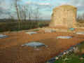
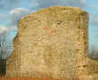
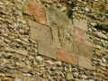
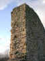
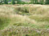
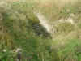
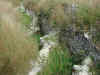
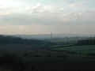

|
Salisbury, Wilts - Clarendon Palace
12th century
An important royal palace throughout the Middle Ages
but now little more than an overgrown site. Notes in
italics from Wiltshire by Nikolaus
Pevsner
Revised by Bridget Cherry (1975) Yale University
Press, New Haven and London.
Click on photos to enlarge








Clarendon appears in a document as a military
gathering-place as early as the 1070s. By 1130 or
earlier it must have been a royal habitation. Henry
II and then Henry III made it into a palace - a
palace, not a castle; for even at the time of its
greatest extension it was not fortified. ..... The
palace was much in use throughout the C14 and to the
later C15. What remained in the C18 was engraved by
Stukeley in 1723. In the C20 nearly all was gone or
smothered in trees and undergrowth In 1933
Professor Tancred Borenius began excavations, and
these were continued to just before the Second World
War. ... (Pevsner goes on to outline the various parts of the
palace as discovered in the excavations).
... The war and the death of Professor Borenius cut
excavations short, and today Clarendon is a tragedy.
... One crag of wall stands up. All the rest is back
to its sleeping beauty. Surely, out of respect for
English history if for no other reason, these
remains ought to be as clearly visible as those of
Old Sarum.
However, some conservation and improvement work is
now taking place under a 5-year plan (2000-2005).
Some historical associations:
Perhaps most significantly, the
Constitutions of Clarendon, which have been
described as England's first constitution. Promulgated
here by King Henry II in 1164 as a definition of
church-state relations in England, they provoked the
quarrel between the king and his archbishop of
Canterbury, Thomas Becket.
Under King Edward III, two kings were held captive
here - David, king of Scotland, and John, king of
France.
King Henry VI had his first onset of insanity here in
1453.
|